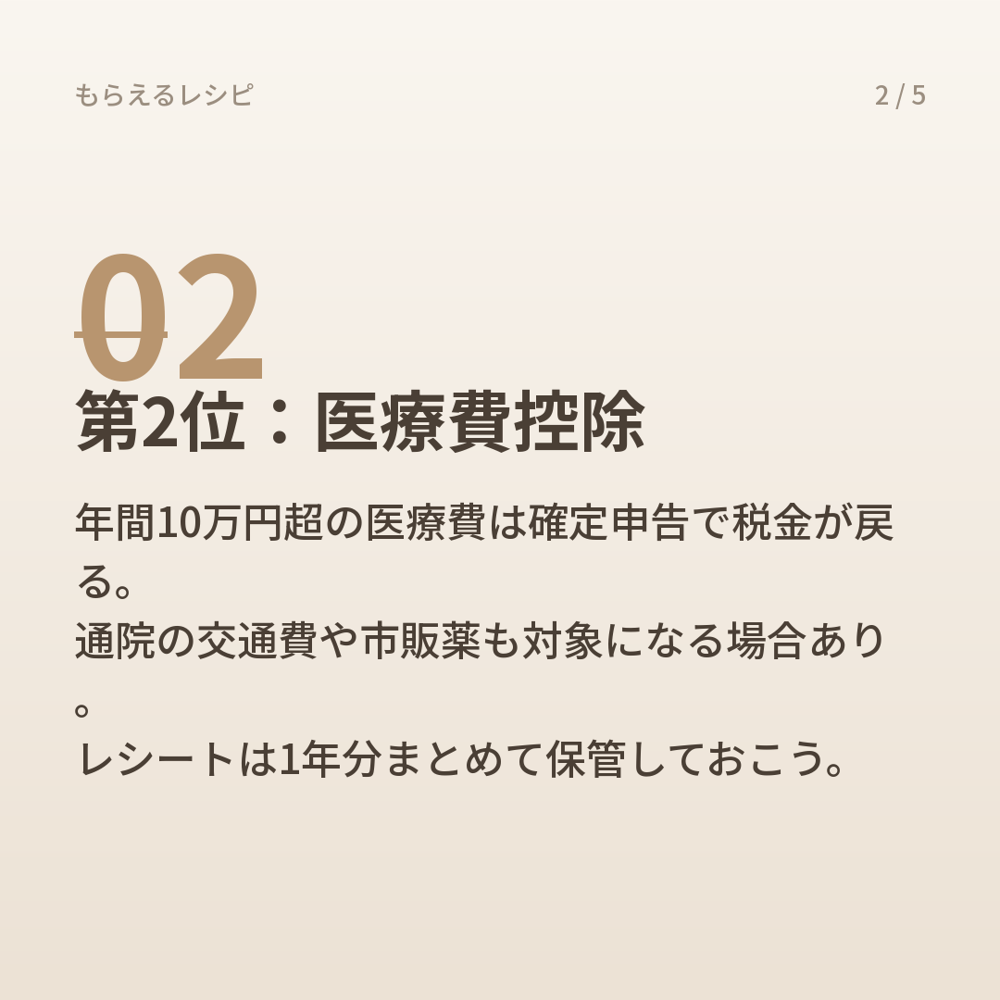
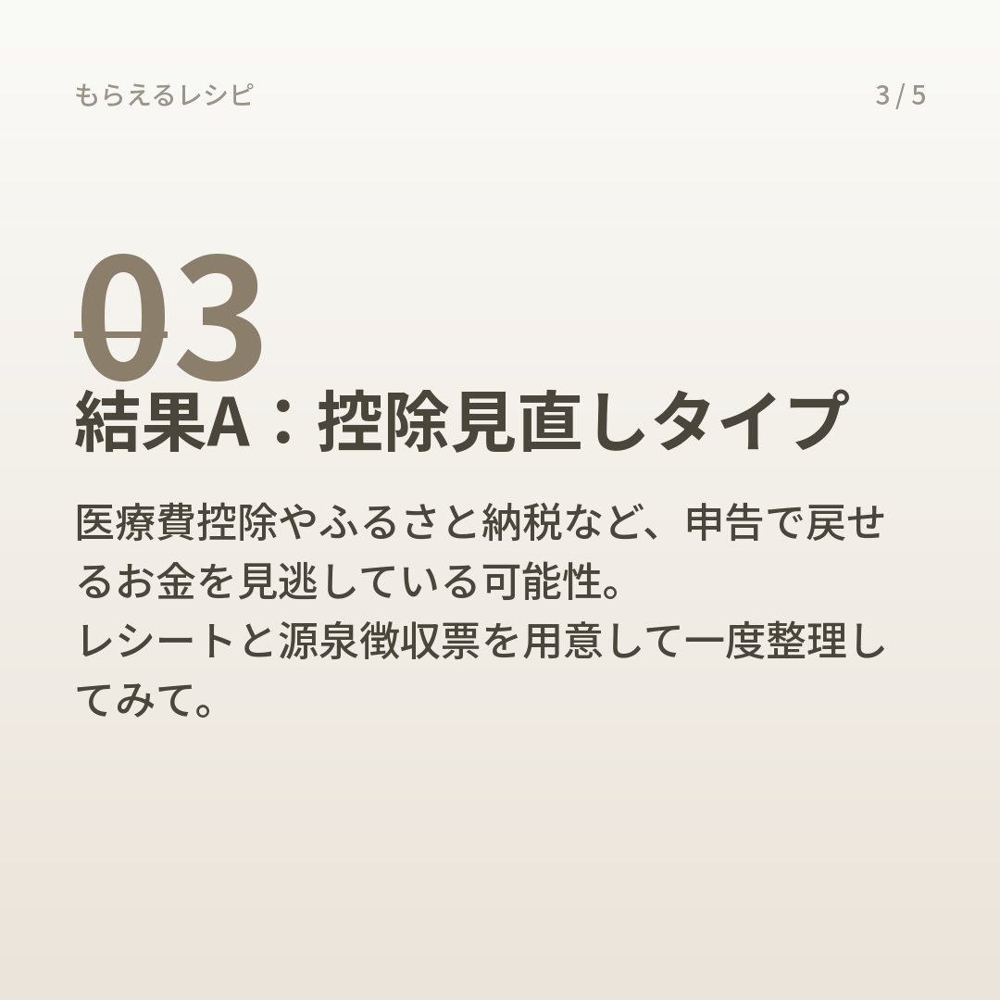
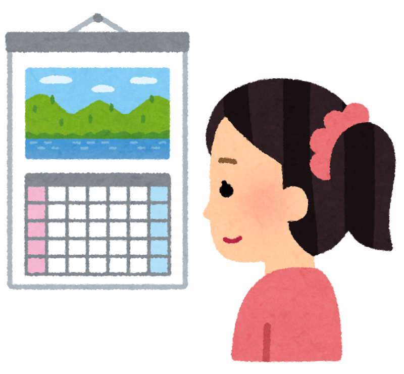
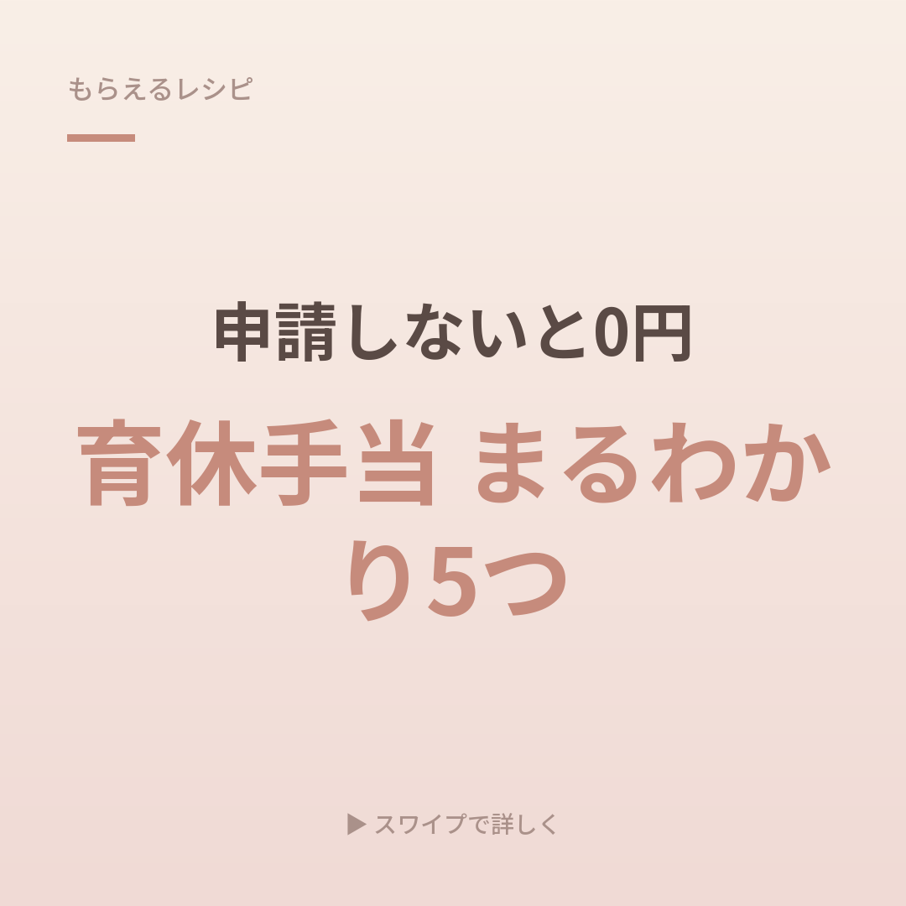
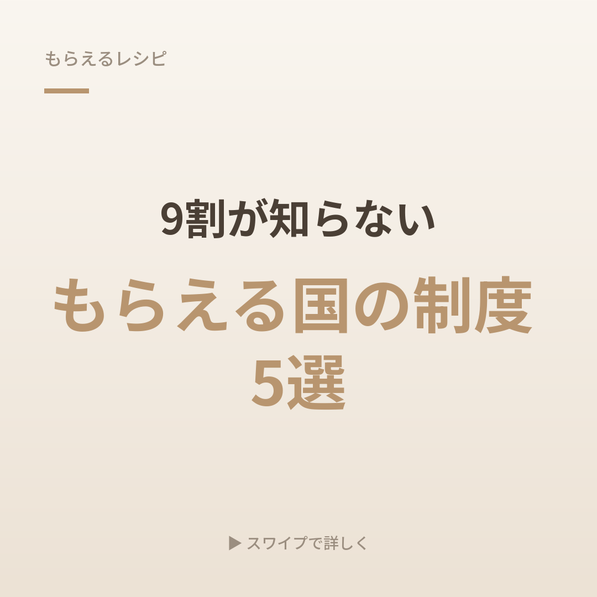
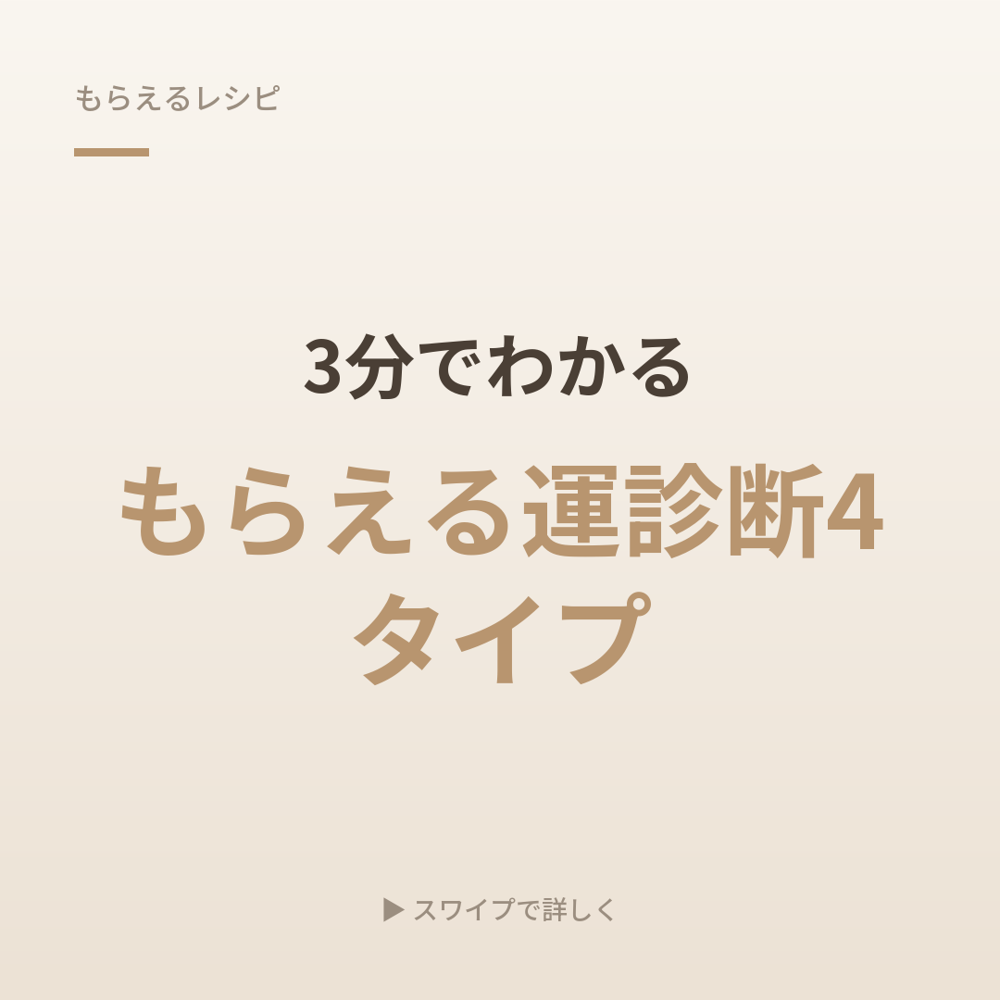

こんな情報をお届けしています
配信していくカードの中身です

手当・給付金の解説
知らないと申請できない公的な制度を、もらい忘れの多い順にわかりやすく整理してお届けします。

あなたに合う制度がわかる診断
働き方や状況によって変わる「もらえる・戻せるお金」を、質問形式で整理します。

申請のタイミング・注意点
「知ってたのに間に合わなかった」を防ぐための、期限や手続きのコツをまとめます。



申請すればもらえる公的な制度や手当を、公式情報でひとつずつ確認してからお届けします。
3つの質問で診断してみる診断だけでOK・所要30秒
3つの質問に答えるだけで、見逃しがちなジャンルがわかります
世の中には情報があふれています。それをひとつずつ確認して、整理する場所でありたいと思っています。
給付金や手当をかたった詐欺が増えています。ご登録の前に、行っていないことを先にお伝えします。
給付金・手当をかたる詐欺の手口は、消費者庁・国民生活センターが注意喚起しています。少しでも不審に思ったら、消費者ホットライン「188」にご相談ください。
配信していくカードの中身です

知らないと申請できない公的な制度を、もらい忘れの多い順にわかりやすく整理してお届けします。

働き方や状況によって変わる「もらえる・戻せるお金」を、質問形式で整理します。

「知ってたのに間に合わなかった」を防ぐための、期限や手続きのコツをまとめます。
登録前に気になることをまとめました
Q.本当に無料ですか？あとから料金を請求されませんか？
A.情報の配信もLINEへのご登録も無料です。こちらから一方的に有料サービスを売り込むことはありません。
Q.なぜこの情報を無料で発信しているのですか？
A.「知らないから損する」を、ひとりでも減らしたい。それが発信を始めた理由です。きっかけは、運営者自身の携帯料金でした。元々かなり高額なプランを使っていたのですが、副業向けの法人プランに変えたことで、毎月2〜3万円だった携帯料金が3〜4千円になりました（効果には個人差があります）。携帯料金という些細なことかもしれませんが、知らないというだけでそれだけ損をするんだと気づいたきっかけになりました。同じように、公的な手当や給付金も「知らないだけ」で申請できずに終わってしまう制度です。公式情報をひとつずつ確認する手間を、代わりに引き受けたいと考えています。個別相談の中で、ご希望に応じて提携する法人様をご紹介することがあり、その場合は紹介先の企業様から手数料をいただく仕組みで運営しています。皆さまから紹介の対価をいただくことはありません。
Q.個人情報は何に使われますか？
A.LINEにご登録いただくと、LINEのユーザーIDや表示名などの情報を、情報配信とお問い合わせ対応のために利用します。詳しくはプライバシーポリシーをご覧ください。
Q.MLMや高額な商材の勧誘はありますか？
A.ありません。お届けしているのは公的な制度・手当・節約に関する情報が中心です。ご希望があれば提携する法人様をご紹介することもありますが、強引な勧誘は行いません。
Q.運営者は誰ですか？
A.個人で「もらえるレシピ」として活動しています。詳しくは運営者についてをご覧ください。